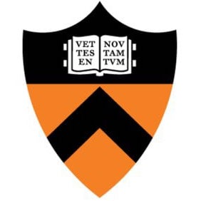
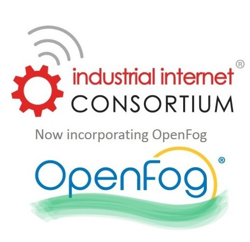

I'm currently an Adjunct Faculty at New York University (NYU), while working on state-of-the-art Recommender Systems at Google. I am an enthusiastic hands-on researcher/engineer with extensive experience in Machine Learning (ML) and Security & Privacy. My interests lie at the intersection of ML, Recommendation Systems, Information Security, and User Privacy.
Experience
 Adjunct Professor [2022-Present]
Adjunct Professor [2022-Present]
Department of Electrical and Computer Engineering, New York University (NYU)
Spring 2022: Advanced Machine Learning (ECE-GY 7123/CS-GY 6953: Deep Learning)
 Software Engineer [2019-Present]
Software Engineer [2019-Present]
Google Search and Assistant, Google Inc

ML Research Associate [2017-2019]
Princeton University
 ML Research Associate [2017-2019]
ML Research Associate [2017-2019]
Purdue University

Technical Advisor: ML for Distributed Applications [2016-2018 Part-time]
OpenFog Consortium (now combined with the IIC)
Research Assistant (PhD Candidate): ML for Security & Privacy [2012-2016]
Princeton University
ML SWE/Researcher: ML for Medical Image Processing [2010-2012]
Image Processing Lab, Tehran, Iran
Education
Ph.D., Computer Engineering (2012-2016)
Advisor: Professor Niraj K Jha, Princeton University
Dissertation: Addressing Security and Privacy Challenges in IoT [ML for Security & Privacy]
 B.Sc., Computer Engineering (2008-2012)
B.Sc., Computer Engineering (2008-2012)
Sharif University of Technology, Tehran
Publications [Scholar]
Got an award: 🎖
Received major press coverage: 📸
Among the journal's popular papers for 2+ years: ⭐
Books
-
Smart Healthcare [Machine Learning and Security Challenges]
Hongxu Yin, Ozge Akmandor, A. Mosenia, and N. K. Jha
Journal Papers
-
A Comprehensive Study of Security of Internet-of-Things ⭐
A. Mosenia and N. K. Jha
IEEE Trans. Emerging Topics in Computing (TETC) -
CABA: Continuous Authentication Based on BioAura 🎖 📸 ⭐
A. Mosenia, S. Sur-Kolay, A. Raghunathan, and N. K. Jha
IEEE Trans. Computers (TC) -
PinMe: Tracking a Smartphone User around the World 🎖 📸
A. Mosenia, X. Dai, P. Mittal, and N. K. Jha
IEEE Trans. Multi-Scale Computing Systems (TMSCS) -
Physiological Information Leakage: A New Frontier in Health Information Security
A. Mosenia, S. Sur-Kolay, A. Raghunathan, and N. K. Jha
IEEE Trans. Emerging Topics in Computing (TETC) -
An Energy-efficient System for Long-term Continuous Personal Health Monitoring 🎖
A. Mosenia, M. Mozaffari-Kermani, S. Sur-Kolay, A. Raghunathan, and N. K. Jha
IEEE Trans. Multi-Scale Computing Systems (TMSCS) -
Wearable Medical Sensor-based System Design: A Survey ⭐
A. Mosenia, S. Sur-Kolay, A. Raghunathan, and N. K. Jha
IEEE Trans. Multi-Scale Computing Systems (TMSCS) -
DISASTER: Dedicated Intelligent Security Attacks against Sensor-triggered Emergency Responses
A. Mosenia, S. Sur-Kolay, A. Raghunathan, and N. K. Jha
IEEE Trans. Multi-Scale Computing Systems (TMSCS) -
OpSecure: A Secure Unidirectional Optical Channel for Implantable Medical Devices
A. Mosenia and N. K. Jha
IEEE Trans. Multi-Scale Computing Systems (TMSCS)
Conference Proceedings
-
DARTS: Deceiving Autonomous Cars with Toxic Signs 📸
C Sitawarin, AN Bhagoji, A Mosenia, M Chiang, P Mittal
-
OpenFog Security Requirements and Approaches
B. A. Martin, F. Michaud, D. Banks, A. Mosenia, R. Zolfonoon, S. Irwan, S. Schrecker, and J. K. Zao
Fog World Congress -
Not All Pixels are Born Equal: An Analysis of Evasion Attacks under Locality Constraints
CV Sehwag, C Sitawarin, AN Bhagoji, A Mosenia, M Chiang, P Mittal
ACM SIGSAC Conference on Computer and Communications -
ProCMotive: Bringing Programmability and Connectivity into Isolated Vehicles 🎖
A. Mosenia, J. F. Bechara, T. Zhang, P. Mittal, and M. Chiang
ACM Int. Joint Conf. Pervasive and Ubiquitous Computing (Ubicomp'18) -
Artesian: Acoustic Denial of Service Attacks on HDDs 📸
M. Shahrad, A. Mosenia, L. Song, M. Chiang, D. Wentzlaff, and P. Mittal
ACM Attacks and Solutions in Hardware Security -
Rogue Signs: Deceiving Traffic Sign Recognition with Malicious Ads and Logos 📸
C Sitawarin, AN Bhagoji, A Mosenia, M Chiang, P Mittal
-
Anonymizing Masses: Practical Light-weight Anonymity at the Network Level
HM Moghaddam, A Mosenia
Teaching
- Spring 2022: ECE-GY 7123: Advanced Machine Learning (Deep Learning), NYU
- Spring 2016: ELE 464: Embedded Computing, Princeton University
- Spring 2016: COS/ELE 432: Information Security, Princeton University
- Fall 2013: COS 306/ELE 206: Contemporary Logic Design, Princeton University